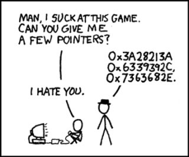

Learning How to Computer Program
December 28, 2019
I have been spending the last few months rather disappointingly, trying to learn how to Computer Program. I attempted to go to a local community college to take classeswhile fullfilling some of my other obligations and I got stuck taking an pre-requisite math class. I've learned some of the basics and I hope I can share this with you here.
